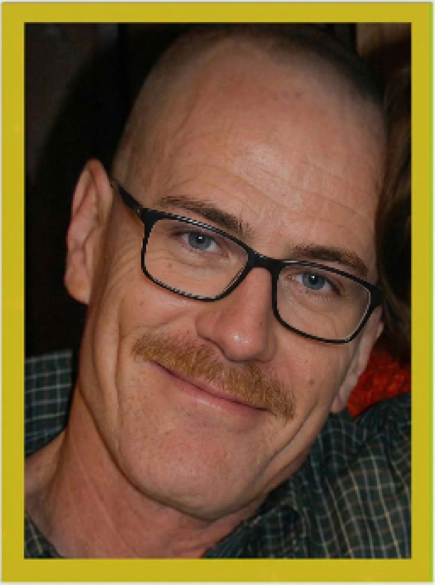
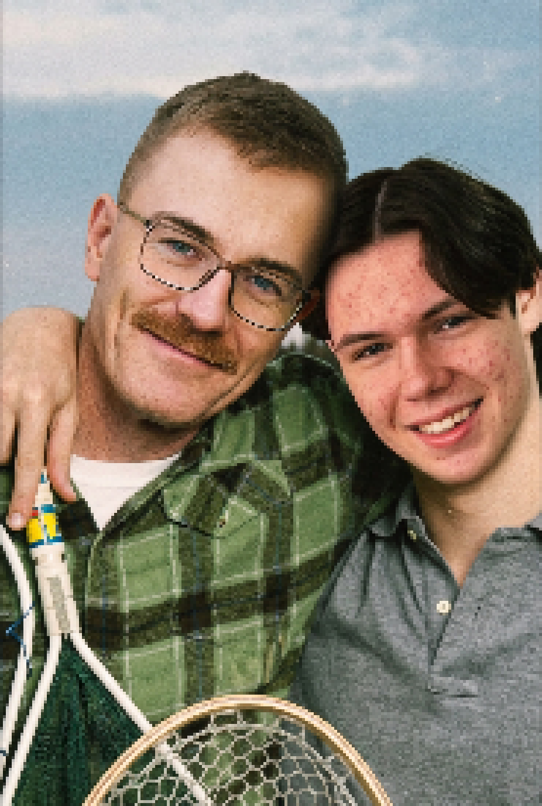
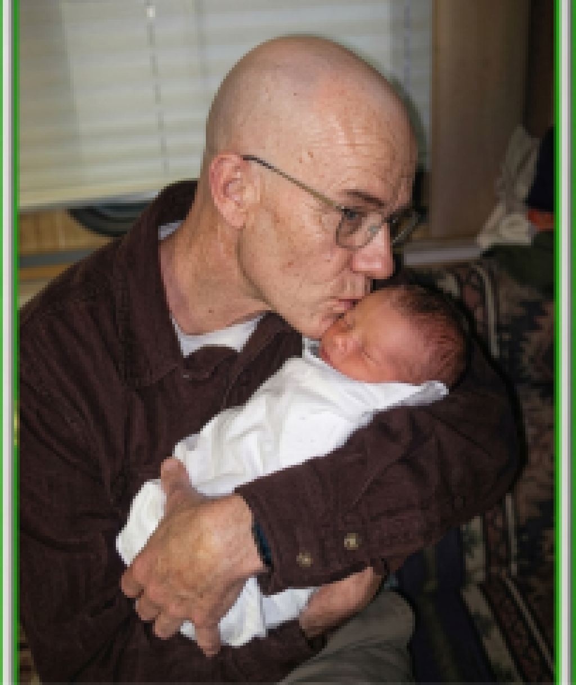
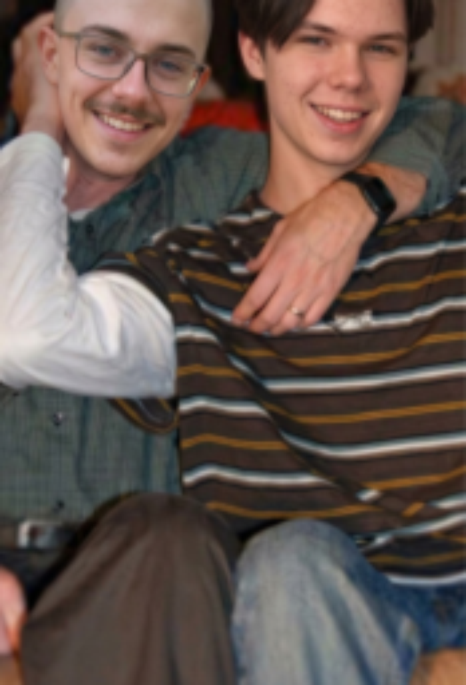
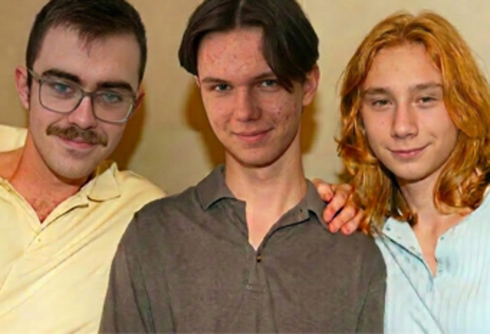
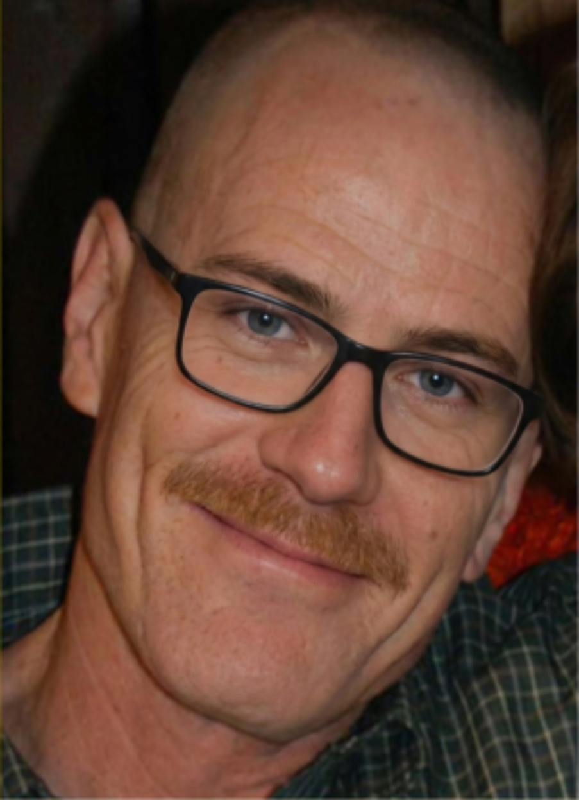

Мой папа — потрясающий человек, и я понял это лишь в тот день,
когда невролог после пятнадцати минут беседы тихо вышел
из кабинета и шёпотом сказал маме одно слово, которое тут же
поделило нашу жизнь на «до» и на «ну, в принципе, так и было,
но теперь хотя бы яснее». И многое наконец объяснилось —
например, почему папа всю жизнь хранил ключи от квартиры
в морозилке и искренне считал, что Кишинёв находится где-то
в районе Якутии.
Теперь, когда папа в двадцатый раз называет меня Валерой (меня,
вообще-то, зовут Ваня) или здоровается со стиральной машиной,
я уже не обижаюсь и не поправляю его, а просто радуюсь, что
он дома и что у него всё хорошо. Ну, насколько у него в
принципе всё может быть хорошо.

Мой папа — ювелир и, по его собственным словам, один из
лучших на всём Южном Урале, хотя на всём Южном Урале про
это почему-то никто не в курсе, кроме самого папы. В его
магазинчике, расположенном между шиномонтажом и рюмочной,
лежат «редчайшие уральские изумруды» (стеклышки от бутылок
«Жигулёвского»), «чёрный жемчуг Индийского океана» (подшипники),
и даже один «метеоритный осколок с характерным магнитным полем»
(железная крышка от кастрюли). Папа искренне уверен, что всё
это стоит больших денег, и охотно делится этой уверенностью
с редкими посетителями, а те, как правило, уходят не с камнями,
а с сильным желанием выпить чего-нибудь в соседнем заведении.
В Верхнеуральске папу знают и любят абсолютно все. Впрочем,
говоря «все», я немного преувеличиваю — живые люди к папе
ходить давно перестали, и его главным собеседником стала
рыжая белка из леса за окраиной города. Папа, надо сказать,
ушёл общаться с белкой добровольно: однажды он пришёл в магазин
сантехники и три часа предлагал им «редкий мадагаскарский
турмалин» (обычная сосновая шишка), и директор, устав
отказывать, ласково посоветовал ему поискать «более понимающую
аудиторию в лесу». С тех пор папа именно там и проводит
рабочие часы: сидит на пеньке и с упоением рассказывает
белке про уникальную огранку шишки «ручной работы древних
уральских мастеров». Белка слушает. Кажется, ей некуда деться.
Если честно, звоночки были всегда. Мама рассказывает, что на
их первом свидании папа подарил ей «настоящий бразильский
аквамарин», который назавтра оказался синей пуговицей от пальто.
Когда я был маленький, папа всерьёз объяснял мне, что Байкал —
это такое огромное пресное море, из которого пьёт вся Европа,
а Ленин, по его версии, изобрёл электричество. Мы с мамой
привыкли и всю жизнь считали, что папа просто со странностями —
пока не выяснилось, что странности у него, оказывается,
медицинские.
Когда невролог наконец произнёс то самое страшное слово —
слабоумие — и с тяжёлым вздохом пояснил, что болезнь
прогрессирует, мы с мамой долго сидели молча и пытались
честно понять, с какого именно момента папа стал слабоумным,
если он и в молодости хранил зарплату в духовке, а мне к
пятилетию подарил «настоящий сапфир» (крышечку от компота).
В конце концов мама просто махнула рукой и сказала, что это,
в сущности, даже удобно: теперь всё, что папа делает, можно
смело списывать на справку — и ту ситуацию с аквариумом, и
ту историю с участковым, и всё остальное, о чём мы с мамой
договорились друг другу никогда не вспоминать.
Какой у меня чудесный папа,
но он, кажется, идиот.
У него слабоумие!
Причём не со вчера, а всегда!
Пожалуйста, скиньтесь папе
на новые мозги
и помолитесь за его IQ!
© Семья Переродиных, г. Верхнеуральск. Папа тоже хотел дочитать, но забыл зачем.